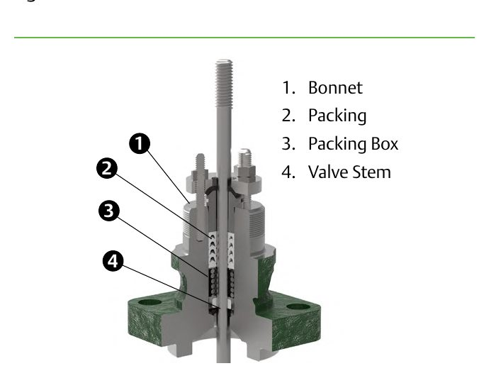
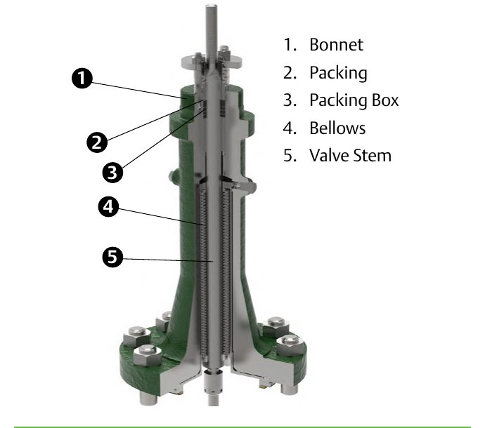

Conventional vs. Bellows-Seal Bonnets
Conventional bonnet

Packing rings load in the packing box — the bored recess around the stem, not the bonnet casting itself
Bellows-seal bonnet

A welded metal bellows replaces packing entirely — zero leakage for hazardous or toxic service
After Control Valve Handbook, 6th ed., Figs. 1.5, 1.6 — used directly. Component Index: cvh-cmp-bonnet-assembly, cvh-cmp-bellows-seal-bonnet.